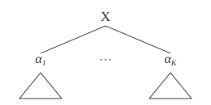
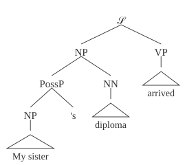
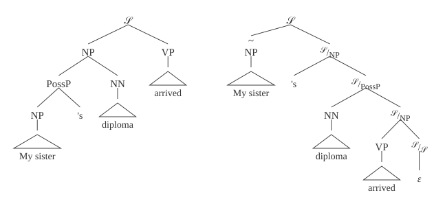

Draft — This article is a work in progress. Content may change.
This post provides the necessary background on semiring-weighted context-free grammars for my series on solving weighted grammars. It is adapted from the preliminaries of Opedal, Tsipidi, Pimentel, Cotterell, and Vieira (2023), An Exploration of Left-Corner Transformations, and it keeps that paper's notation and pictures.
Weighted context-free grammars (WCFGs) define a tractable family of weighted languages, called weighted context-free languages, that is frequently used in NLP applications (see, e.g., Jurafsky and Martin).
Semirings
Definition. A semiring is a tuple $\langle \semiringset, \oplus, \otimes, \zero, \one \rangle$ where $\semiringset$ is a set and the following hold:
- $\oplus$ is an associative and commutative binary operator with an identity element $\zero \in \semiringset$
- $\otimes$ is an associative binary operator with an identity element $\one \in \semiringset$
- Distributivity: $\forall a,b,c \in \semiringset$, $(a \oplus b) \otimes c = (a \otimes c) \oplus (b \otimes c)$ and $c \otimes (a \oplus b) = (c \otimes a) \oplus (c \otimes b)$
- Annihilation: $\forall a \in \semiringset$, $a \otimes \zero = \zero \otimes a = \zero$
The semiring is commutative if $\otimes$ is commutative.
We highlight a few commutative semirings and their use cases:
- boolean $\langle \{\bot, \top\}, \lor, \land, \bot, \top \rangle$: string membership in a language,
- nonnegative real $\langle \mathbb{R}_{\geq 0} \cup \{\infty\}, +, \cdot, 0, 1 \rangle$: the total probability of a string,
- Viterbi $\langle [0,1], \max, \cdot, 0, 1 \rangle$: the weight of the most likely derivation of a string.
For further reading on semirings in NLP, we recommend Goodman (1999) and Huang (2008), as well as my semirings post.
Weighted context-free grammars
Definition. A weighted context-free grammar is a tuple $\grammar = \langle \nts, \terminals, \start, \rules \rangle$ where
- $\nts$ is a set of nonterminal symbols
- $\terminals$ is a set of terminal symbols, $\terminals \cap \nts = \emptyset$
- $\start \in \nts$ is the start symbol
- $\rules$ is a bag (multiset) of weighted production rules. Each rule $r \in \rules$ is of the form $\ntX \xrightarrow{w} \valpha$ where $\ntX \in \nts$, $\valpha \in (\terminals \cup \nts)^*$, and $w \in \semiringset$. We assume that $\semiringset$ is a commutative semiring.
We will use the following notational conventions:
- $\mathrm{X}, \mathrm{Y}, \mathrm{Z} \in \nts$ for nonterminals
- $a, b, c \in \terminals$ for terminals
- $\xx, \yy, \zz \in \terminals^*$ for a sequence of terminals
- $\alpha, \beta, \gamma \in (\terminals \cup \nts)$ for a terminal or nonterminal symbol
- $\valpha, \boldsymbol{\beta}, \boldsymbol{\gamma} \in (\terminals \cup \nts)^*$ for a sequence of nonterminals or terminals
- $\grammar = \langle \nts, \terminals, \start, \rules \rangle$ and $\grammarp = \langle \nts', \terminalsp, \startp, \rules' \rangle$ for WCFGs.
We write $w(r)$ to access the weight of a rule $r$.
When describing a grammar and its rules, we may use the following terms. The size of a grammar is $\sum_{(\ntX \to \valpha) \in \rules} (1 + |\valpha|)$. The arity of a rule $\ntX \to \valpha$ is equal to $|\valpha|$; thus, a rule is nullary if $|\valpha| = 0$, unary if $|\valpha| = 1$, and so on. For technical reasons, it is often convenient to eliminate nullary rules from the grammar.Opedal et al. (2023b, §F) provides an efficient method to remove nullary rules from semiring-weighted CFGs.
Derivations
A derivation is a rooted, $(\nts \cup \terminals)$-labeled, ordered tree where each internal node must connect to its children by a production rule.A derivation may be built by a rule with an empty right-hand side; thus, the leaves may be elements of $\nts$. When rendering such a derivation, childlessness is marked with $\varepsilon$. To access the root label of a derivation $\tree$, we write $\treelabel{\tree}$. The set of all derivations of $\grammar$ is the smallest set $\derivations$ that contains every terminal ($\terminals \subseteq \derivations$) and is closed under the following construction: for every rule $(\ntX \to \alpha_1 \cdots \alpha_K) \in \rules$ and derivations of $\alpha_1, \ldots, \alpha_K$ in $\derivations$, the tree with root $\ntX$ and those derivations as its children is in $\derivations$.

For example, here is a derivation of the sentence "My sister's diploma arrived" (subtrees whose details don't matter are drawn as triangles over their yields):

Let $\tree$ be a derivation built by the rule $\ntX \to \alpha_1 \cdots \alpha_K$ from subderivations $\tree_1, \ldots, \tree_K$ (as in the figure above). The yield $\treeyield{\tree} \in \terminals^*$ of a derivation is
- if $\tree \in \terminals$: $\treeyield{\tree} \defeq \treelabel{\tree} = a$
- else: $\treeyield{\tree} \defeq \treeyield{\tree_1} \circ \cdots \circ \treeyield{\tree_K}$
where $\circ$ denotes concatenation. The weight $\treeweight{\tree} \in \semiringset$ of a derivation is
- if $\tree \in \terminals$: $\treeweight{\tree} \defeq \one$
- else: $\treeweight{\tree} \defeq w(\ntX \to \alpha_1 \cdots \alpha_K) \otimes \treeweight{\tree_1} \otimes \cdots \otimes \treeweight{\tree_K}$
Weighted languages
The weighted language of $\alpha \in (\terminals \cup \nts)$ is a function $\grammar_\alpha \colon \terminals^* \to \semiringset$ defined as follows:
$$ \grammar_\alpha(\xx) \defeq \bigoplus_{\tree \in \derivations_\alpha(\xx)} \treeweight{\tree} $$
where $\derivations_\alpha \defeq \{ \tree \in \derivations \colon \treelabel{\tree} = \alpha \}$ denotes the subset of $\derivations$ containing trees labeled $\alpha$, and $\derivations_\alpha(\xx) \defeq \{ \tree \in \derivations_\alpha \colon \treeyield{\tree} = \xx \}$ denotes those with yield $\xx$. In words, the value of a string $\xx \in \terminals^*$ in the weighted language $\grammar_\alpha$ is the $\oplus$-sum of the weights of all trees in $\derivations_\alpha$ with $\xx$ as their yield. The weighted language of the grammar $\grammar$ is $\grammar(\xx) \defeq \grammar_\start(\xx)$. Given a set of symbols $\mathcal{X}$, we write $\derivations_{\mathcal{X}}$ as shorthand for $\bigcup_{\alpha \in \mathcal{X}} \derivations_\alpha$. Lastly, let $\sem{\tree}$ denote the weighted language generated by the tree $\tree$.Formally, $\sem{\tree}(\xx) \defeq \treeweight{\tree}$ if $\xx = \treeyield{\tree}$ else $\zero$.
We define the following operations on weighted languages $\grammar$ and $\grammarp$, for $\xx \in (\terminals \cup \terminalsp)^*$:
- Union: $[\grammar \oplus \grammarp](\xx) \defeq \grammar(\xx) \oplus \grammarp(\xx)$
- Concatenation: $[\grammar \circ \grammarp](\xx) \defeq \bigoplus_{\yy \circ \zz = \xx} \grammar(\yy) \otimes \grammarp(\zz)$
Note that these operations form a (noncommutative) semiring over weighted languages where $\zero$ is the language that assigns weight zero to all strings and $\one$ is the language that assigns one to the empty string and zero to other strings.
The weighted language of $\grammar$ may also be expressed as a certain solutionNote that the system of equations does not necessarily have a unique solution. In the case of an $\omega$-continuous semiring, the definition of $\grammar_\alpha$ above coincides with the smallest solution to these equations under the natural ordering (Droste and Kuich, 2009). to the following system of equations:
$$ \begin{aligned} \grammar_a &= \one_a & \forall a \in \terminals \\ \grammar_\ntX &= \bigoplus_{(\ntX \xrightarrow{w} \beta_1 \cdots \beta_K) \in \rules} w \circ \grammar_{\beta_1} \circ \cdots \circ \grammar_{\beta_K} & \forall \ntX \in \nts \end{aligned} $$
where $\one_a$ is the weighted language that assigns $\one$ to the string $a$ and $\zero$ to other strings.
These equations are where the grammar series picks up. Its algorithms solve the special case where we forget the strings and only keep the total weight, $\bigoplus_{\xx} \grammar_\ntX(\xx)$. In that case, the equations live in the (commutative) semiring $\semiringset$ itself.
Useless symbols, trimming, and equivalence of grammars
We say that $\alpha$ is useless if there does not exist a derivation $\tree \in \derivations_\start$ that has a subderivation $\tree'$ with $\treelabel{\tree'} = \alpha$. We define trimming $\mathrm{TRIM}(\grammar)$ as removing each useless nonterminal and any rule in which they participate. It is easy to see that trimming does not change the weighted language of the grammar because no useless nonterminals participate in a derivation rooted at $\start$. We can trim useless rules in linear time using well-known algorithms (Hopcroft and Ullman, 1979).
We say that grammars $\grammar$ and $\grammarp$ are equal ($\grammar = \grammarp$) if they have the same tuple representation after trimming. We say they are equivalent ($\grammar \equiv \grammarp$) if they define the same weighted language.I.e., $(\grammar \equiv \grammarp) \Longleftrightarrow \forall \xx \in (\terminals \cup \terminalsp)^* \colon \grammar_\start(\xx) = \grammarp_{\startp}(\xx)$. We say that they are $\mathcal{X}$-bijectively equivalent ($\grammar \equiv_{\mathcal{X}} \grammarp$) if a structure-preserving bijection of type $\Dmap \colon \derivations_{\mathcal{X}} \to \derivationsp_{\mathcal{X}}$ exists. The mapping $\Dmap$ is structure-preserving if ($\forall \tree \in \derivations_{\mathcal{X}}$) it is (i) label-preserving ($\treelabel{\tree} = \treelabel{\Dmap(\tree)}$), (ii) yield-preserving ($\treeyield{\tree} = \treeyield{\Dmap(\tree)}$), and (iii) weight-preserving ($\treeweight{\tree} = \treeweight{\Dmap(\tree)}$). Suppose $\grammar \equiv_{\mathcal{X}} \grammarp$, $\start \in \mathcal{X}$, and $\start = \startp$; then $\grammar \equiv \grammarp$, but not conversely. A benefit of this stronger notion of equivalence is that derivations in $\grammar$ and $\grammarp$ are interconvertible: we can parse in $\grammar$ and convert to a parse in $\grammarp$ and vice versa.
Further reading: the left-corner transformation
Grammar transformations are functions that map one context-free grammar to another, such as nullary rule removal, rule binarization, and conversion to normal forms. The left-corner transformation (Rosenkrantz and Lewis, 1970) maps the derivation trees of an original grammar into isomorphic trees in the transformed grammar. The trees of the transformed grammar are such that the base subtree of a left-recursive chain (the left corner) is hoisted up in a derivation tree while replacing the left-recursive path to the left corner with a right-recursive path to an empty constituent:

The paper (Opedal et al., 2023) generalizes the left-corner transformation to semiring-weighted grammars, relates it to the speculation transformation, and proves that the transformed grammar's derivations are in bijection with the original's. The code is in rycolab/left-corner, the WCFG library used by the grammar series.
References
- Andreas Opedal, Eleftheria Tsipidi, Tiago Pimentel, Ryan Cotterell, and Tim Vieira. An Exploration of Left-Corner Transformations. EMNLP 2023.
- Andreas Opedal, Ran Zmigrod, Tim Vieira, Ryan Cotterell, and Jason Eisner. Efficient Semiring-Weighted Earley Parsing. ACL 2023.
- Joshua Goodman. Semiring Parsing. Computational Linguistics, 1999.
- Liang Huang. Advanced Dynamic Programming in Semiring and Hypergraph Frameworks. COLING 2008 tutorial notes.
- Manfred Droste and Werner Kuich. Semirings and Formal Power Series. Handbook of Weighted Automata, 2009.
- John E. Hopcroft and Jeffrey D. Ullman. Introduction to Automata Theory, Languages and Computation. 1979.
- Daniel J. Rosenkrantz and Philip M. Lewis II. Deterministic Left Corner Parsing. 1970.
- Dan Jurafsky and James H. Martin. Speech and Language Processing.